PLATE 02 · 熟成と保存
時間が風味を育てる
Time as an
ingredient.
屠畜直後の硬直した筋肉は、低温で日数を重ねることで再び軟らかくなる。筋肉細胞のプロテアーゼが筋源繊維を分解し、解硬と熟成のプロセスが進行する。さらに塩漬・燻煙・乾燥・発酵 ── ハム、ソーセージ、ジャーキー、生ハム ── 保存技術は風味の発明でもあった。
PHOTO · UNSPLASH
人類は鳥獣の肉を捌き、熟成させ、火を入れることで文明を育ててきた。これは、地球上で年間3億トンを超える「肉」という、最も原初的で、最も洗練された食材についての記録である。
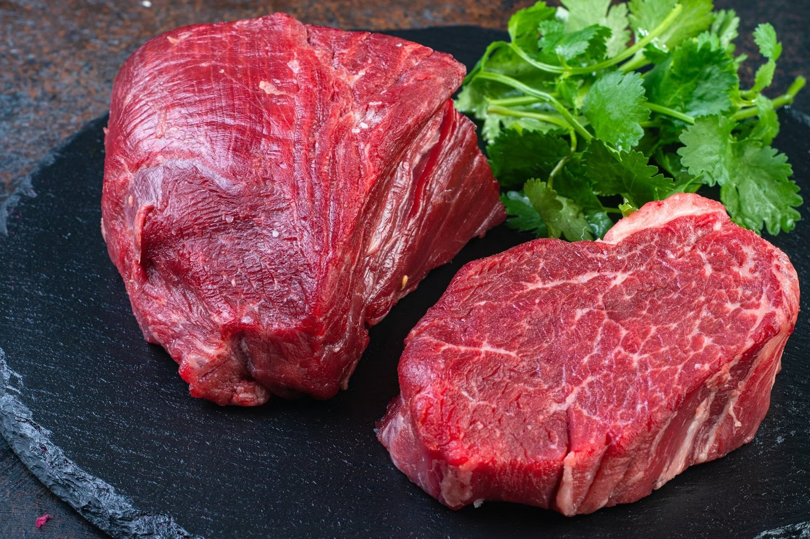
食肉とは、主に鳥類を含む動物の肉、畜産動物または野生動物を食肉加工したものを指す。日本語の「肉」は鳥獣の肉を含意し、魚は別枠とする慣習がある。屠畜直後の筋肉は死後硬直のため硬く、そのままでは食用に供せない。
一定の熟成プロセスを経て解硬されたものこそが、生体内の筋肉と区別される「食肉」である。骨格筋に付随する血管・神経組織、皮下脂肪および筋間脂肪組織も、狭義の食肉に含まれる。可食臓器類——いわゆるモツも、商取引上は副生物として流通するが、科学的には食肉である。
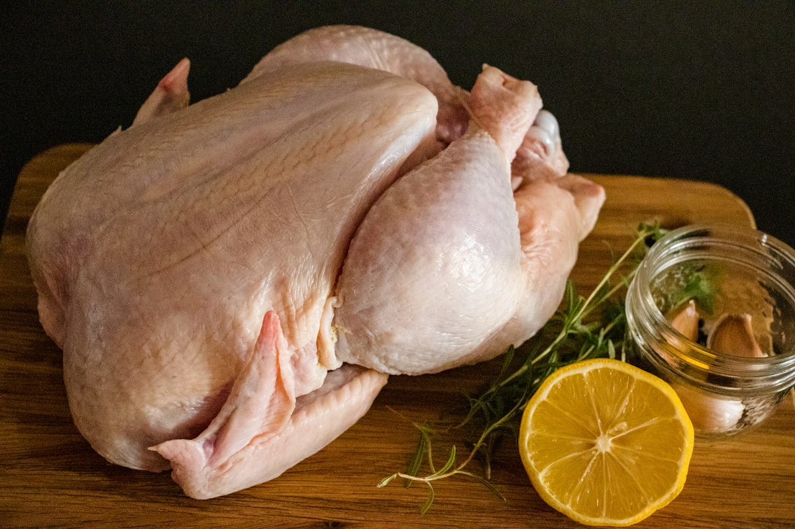
世界で最も生産量が多い食肉。宗教的禁忌がほぼなく、飼料効率にも優れる。2018年の生産は1億2731万トン。
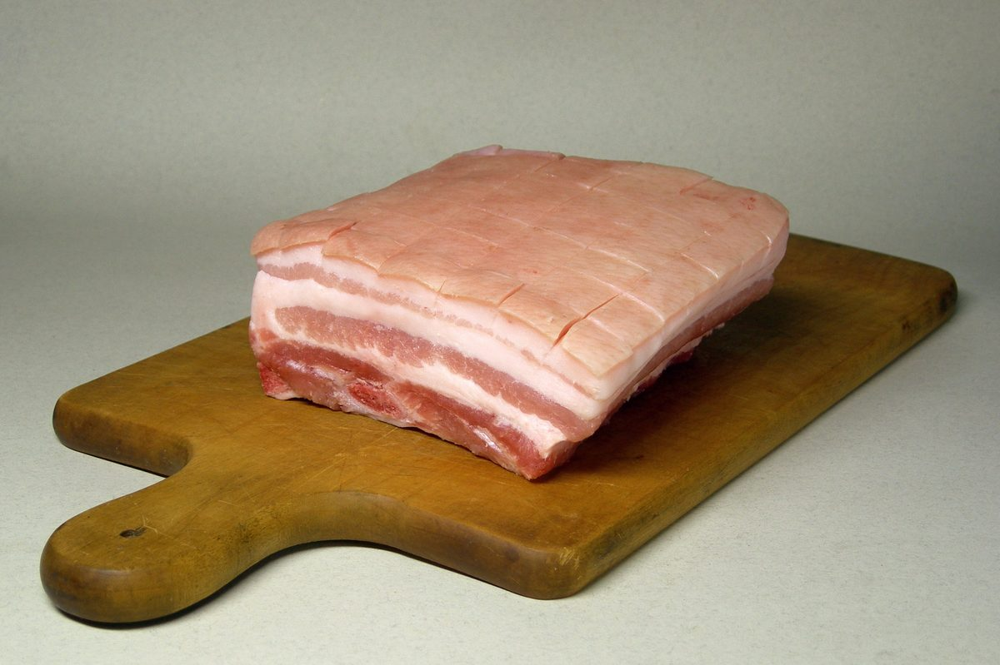
ビタミンB1の優れた給源。日本の食肉消費の中核。イスラム教では不浄とされ、地理的に偏りが大きい。
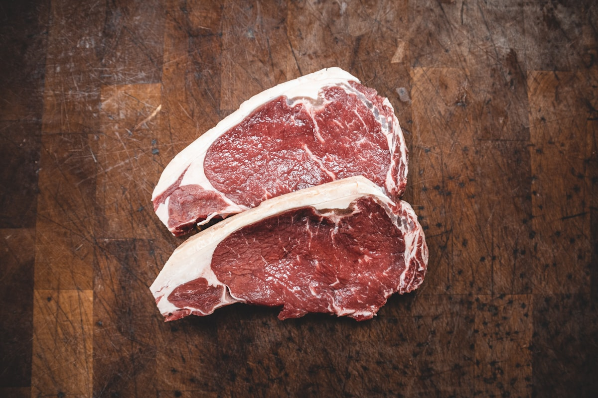
ヒンドゥー教では聖獣のため禁忌。日本では枝肉に対しA5までの厳格な格付制度を持つ。
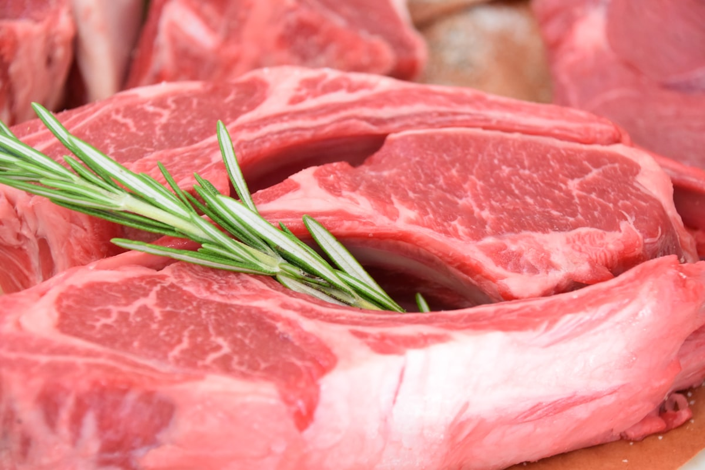
ニュージーランド・オーストラリアで突出して消費される。世界全体では牛肉の数分の一に留まる。
全世界の食肉生産量は年間およそ3億4100万トン。アジアが1億4000万トン超で生産の中心。中国一国だけで8800万トンを生産する。
一人当たりの食肉消費量は、地球上で大きく二極化している。先進国では既に上限に達して頭打ちとなり、新興国では経済成長とともに急増を続けている。
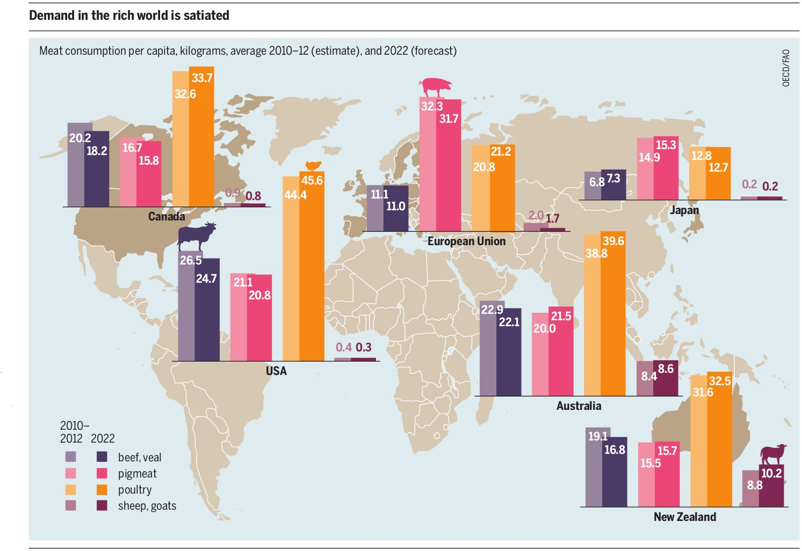
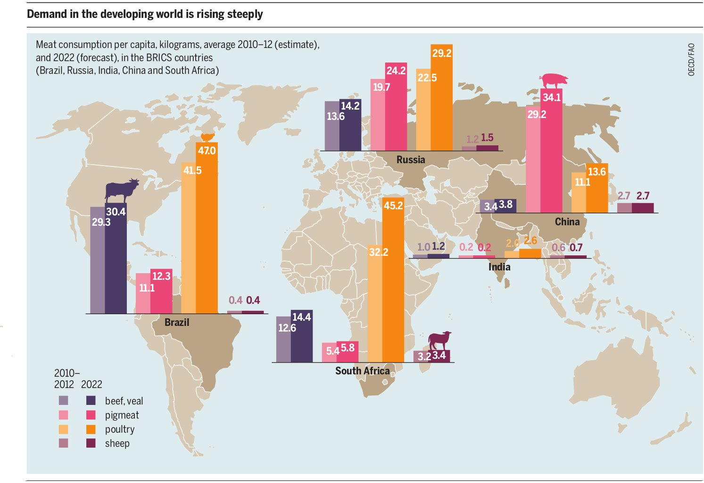
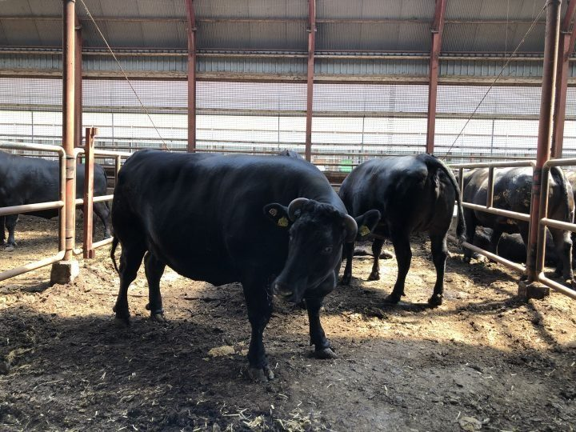
食肉を得るため家畜を飼養する。牛肉1kgに穀物10kgを要するとされる。
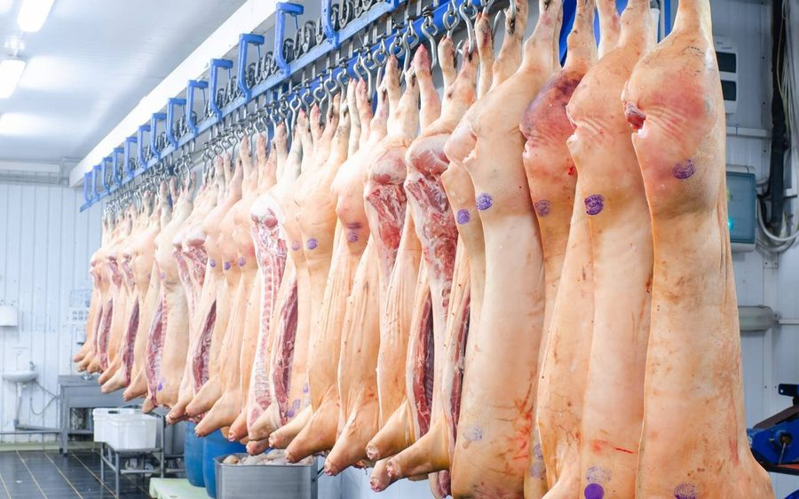
屠畜場へ送られ、解体され、内臓を除去。屠体から枝肉へと姿を変える。
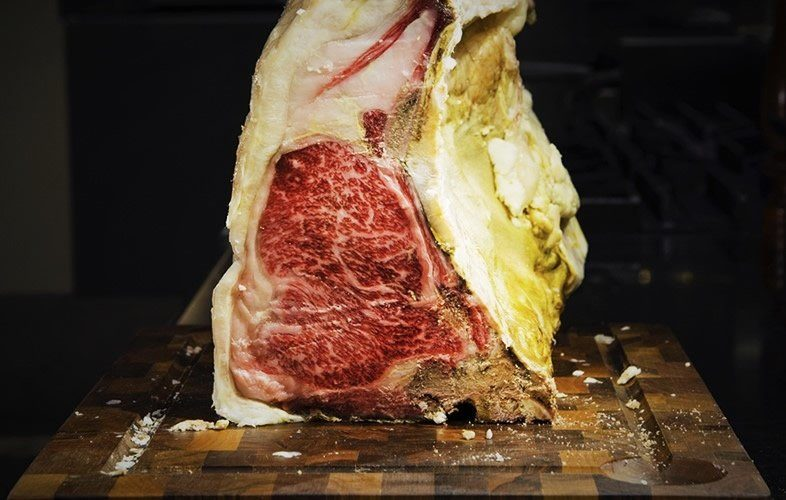
2〜5℃で貯蔵。牛は7〜10日、豚は3〜5日、鶏は半日で解硬。風味が増す。
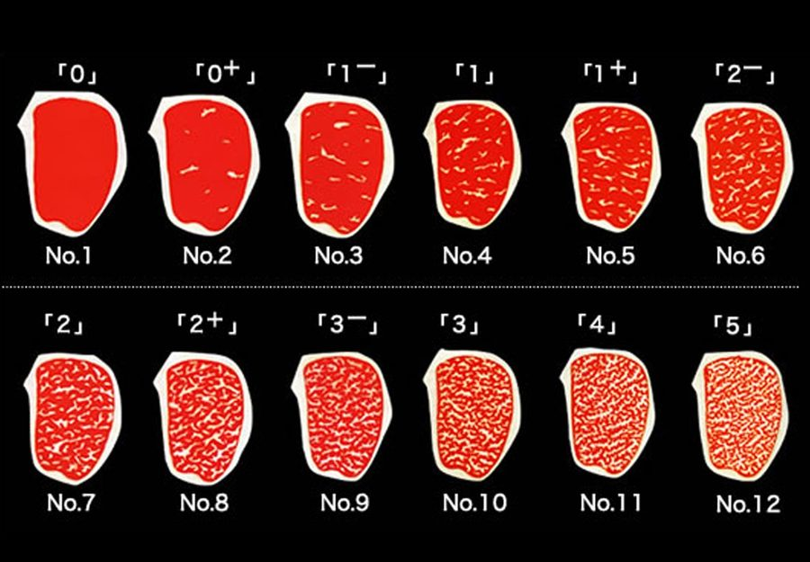
歩留等級A〜C、肉質等級1〜5。最高位はA5。脂肪交雑・色・キメで判定。
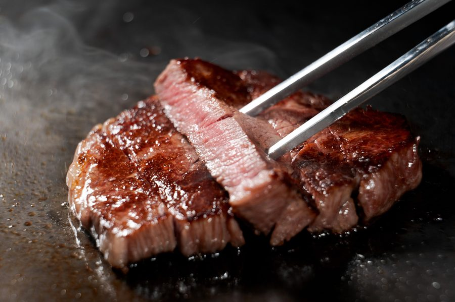
加熱で衛生確保・タンパク質変性・香気生成。レアからウェルダンまで。
食肉の主成分は水である。タンパク質、脂質、無機質、ビタミン── うま味を呈するアミノ酸とイノシン酸、酸味を呈する乳酸、鉄を含むミオグロビン。これらが「肉らしさ」を生む。
食肉の最大の構成要素。組織のしなやかさと食感を司る。
筋線維タンパク質、筋漿タンパク質、結合組織タンパク質の三系統。
中性脂質が大半。霜降り(筋肉内脂肪)はロースで40%超に達することも。
ミオグロビン・ヘモグロビンとして存在。肉の赤色を生み出す本体。
特に豚肉に豊富。日本人に欠乏しがちな栄養素の重要な供給源。
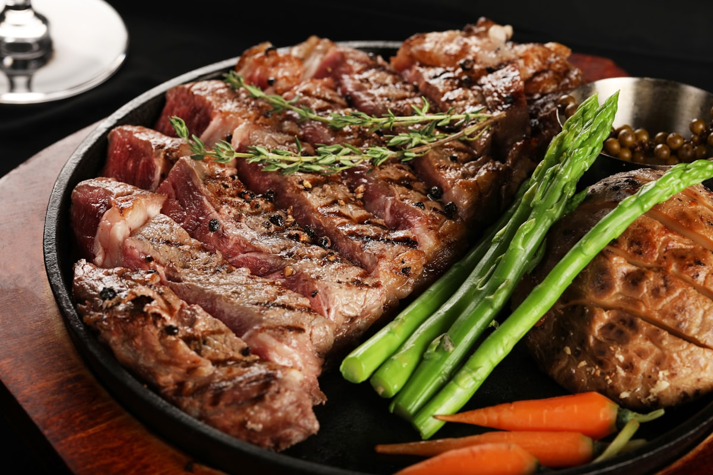
加熱はタンパク質を変性させ、新たなペプチドを生み、独特の香気を立ち上げる。生のままでは噛み切れない筋線維も、火を通すことで初めて食べやすい食感へと変わる。ウェルダン、ミディアム、ミディアム・レア、レア ── その温度の選択は、文化と嗜好と科学の交差点にある。
熟成によって、硬直した死後の筋肉は— 食肉科学 · MEAT SCIENCE
再び軟らかくなり、風味を獲得する。
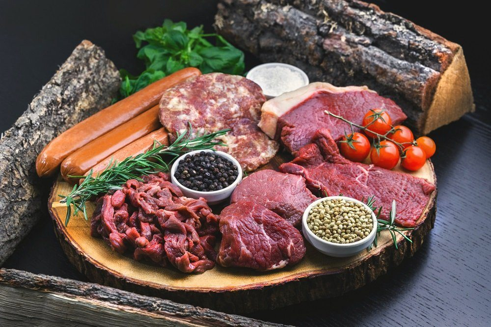
フランスでは野生動物の肉を「ジビエ」と呼び愛好する伝統がある。マガモ、ヤマウズラ、キジ、ライチョウ。狩猟が生んだ食文化。日本でも獣害対策として商品化が進む。
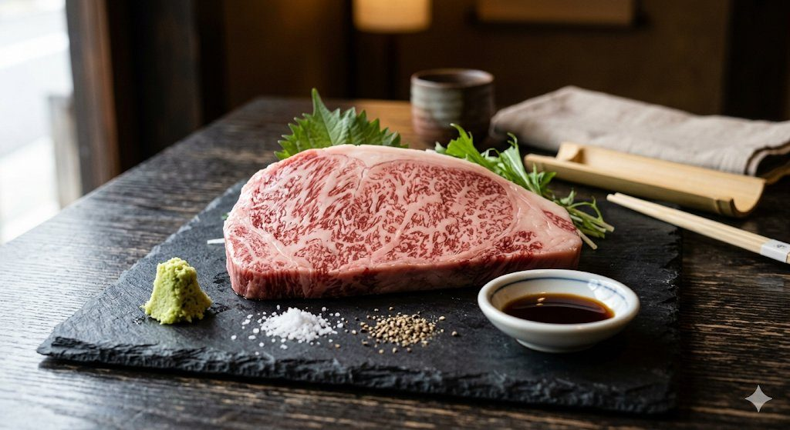
枝肉を第6・第7胸椎間で切開し、脂肪交雑・肉色・キメ・締まりで判定する。歩留A〜C、肉質1〜5。最高位A5は世界的ブランドへ。霜降り至上主義は赤身肉を低く見る問題も孕む。
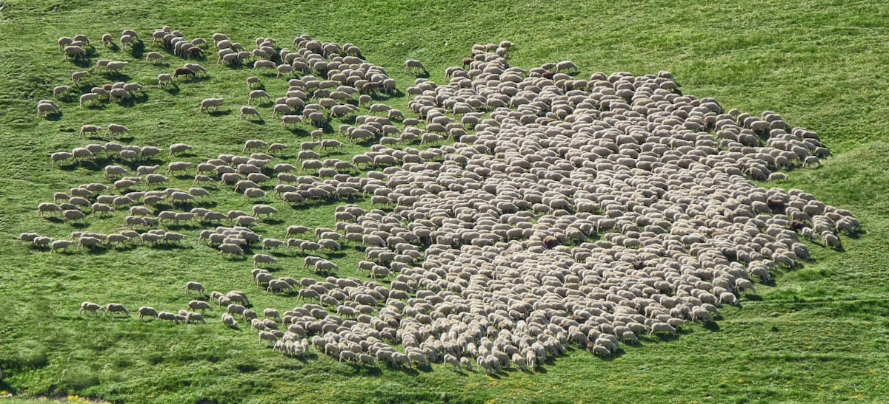
ヒンドゥー教では牛が聖獣、イスラム教では豚が不浄。鶏肉に禁忌をもつ宗教は稀で、これが世界中で需要が偏らない一因となっている。肉の選択は信仰でもある。
屠畜直後の硬直した筋肉は、低温で日数を重ねることで再び軟らかくなる。筋肉細胞のプロテアーゼが筋源繊維を分解し、解硬と熟成のプロセスが進行する。さらに塩漬・燻煙・乾燥・発酵 ── ハム、ソーセージ、ジャーキー、生ハム ── 保存技術は風味の発明でもあった。
FAOの予測によれば、食肉需要は2040年頃まで高中所得国に牽引され増加し、その後2075年頃まで低所得国によって支えられる。資源・環境問題から、減少の時期はさらに早まる可能性もある。
豆類などから肉に似せた味わいを持たせた製品。健康志向・菜食主義に応える。日本の精進料理、台湾素食など、伝統的にも植物から肉を模す技法は存在した。
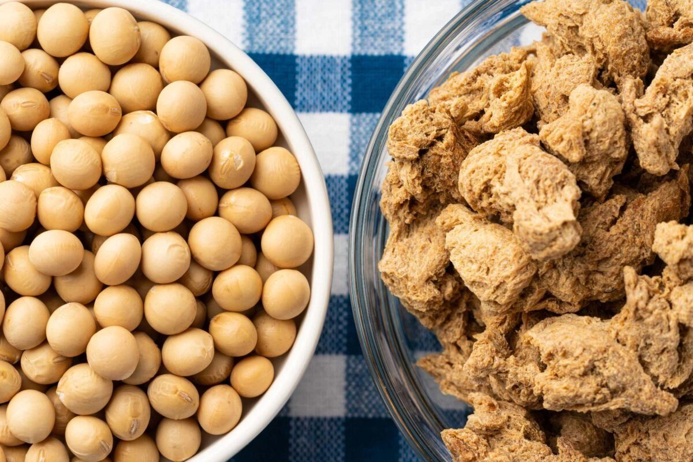
動物を殺傷せず、食肉となる部位の細胞を組織培養する技術。研究は進むが、大量生産技術は未確立。生産コストの壁が普及を阻んでいる。
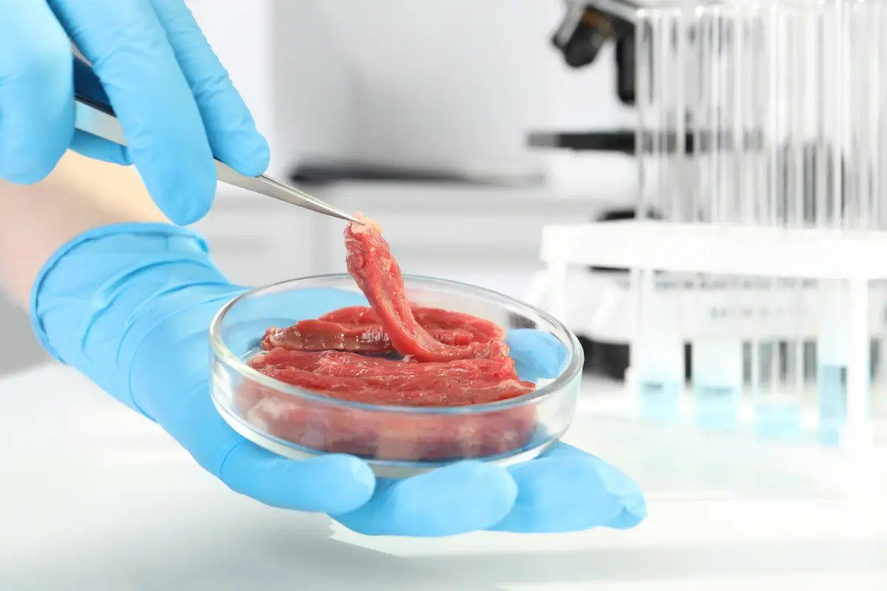
日本では獣害対策の一環として、シカ・イノシシなど野生動物の食肉化が促進されている。ただし生食はE型肝炎・寄生虫リスクから厳禁。
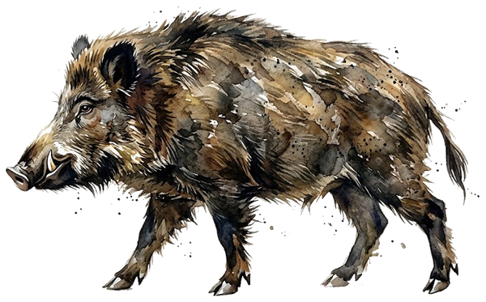